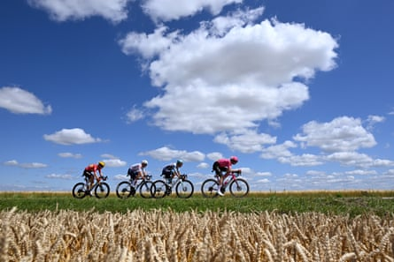

Tadej Pogacar secured his 100th career win on stage four of the Tour de France , after the defending champion narrowly outsprinted the race leader Mathieu van der Poel just before the line in central Rouen.
On the brutal, hilly finishing circuit, Pogacar again asserted himself as the rider to beat in the race this year, piling pressure on rivals Jonas Vingegaard and Remco Evenepoel on the eve of the Tour’s first time trial.
Having exploded past Van der Poel in the final metres, Pogacar said all wins were “special” but “1oo victories later, it still feels super good to cross the finish line first”.
Pogacar and Van der Poel are now tied on overall time, with the Dutchman retaining the yellow jersey only on stage result countback.
“When I launched my sprint, my legs didn’t want to continue any more,” Van der Poel said. “Tadej was the strongest today. It’s no shame losing to him on this parcours.”
Van der Poel expects to cede the race lead in the 33km time trial around Caen on Wednesday. “If we are being realistic, tomorrow will be my last day in yellow.”
For his part, Pogacar has his eyes fixed firmly on the Olympic time trial champion, Remco Evenepoel, who inflicted a significant defeat on the Slovenian in the time trial stage of the recent Critérium du Dauphiné.
“Remco will progress through this race,” he said. “Tomorrow is the perfect time trial for him. He can take some seconds back and there’s no doubt he is the best time triallist in the world. I’ll go full gas from the start and see where this places me, but tomorrow is the race of truth.”
For the Tour’s fourth day, the race assumed its familiar mantle of warm sunshine, high cloud and giant hay bales, as the convoy crossed the Somme and entered Normandy. A four-man break – including Lenny Martinez, the French climber who finished last on stage one to Lille but was now seeking points in the mountains classification – moved ahead, although it only ever led the peloton by a little over two minutes.
As the quartet of finishing climbs loomed on the horizon the peloton picked up speed, reeling in Martinez before the succession of breathless uphill sprints, particularly the 15% Rampe Sainte-Hilaire in Rouen, took their toll.
While Jasper Philipsen, who crashed out on Monday, began his recovery from surgery on his broken collarbone, the rider with whom he collided, Bryan Coquard, was under siege – both from some in the Tour convoy and others on social media.
Lenny Martinez, Kasper Asgreen, Jonas Abrahamsen and Thomas Gachignard compete in a breakaway on stage four.Photograph: Tim de Waele/Getty Images
The UCI’s decision to give the Frenchman a yellow card had drawn an angry reaction from his Cofidis team general manager, Cédric Vasseur, on Tuesday morning. “If you’re giving a yellow card for this, it devalues what that card means,” Vasseur said.
“We’ll discuss it further with the race directors, and maybe it will be overturned. If that’s the standard, they’ll be handing out 25 cards a day, and in a few days we’ll all be sent home.”
A second yellow would lead to Coquard being expelled from the Tour. His Cofidis team were not the only ones to question the sanctions imposed on the Frenchman. “It’s very easy to judge from watching on a 55‑inch TV what one should have done,” the EF Education-EasyPost sports director, Charly Wegelius, said. “It’s a bit different when you’re on the bike.”
Coquard’s sponsor, Cofidis, also sprang to his defence saying: “We condemn any form of intimidation or abuse directed at our riders on social media. The team reserves the right to file a complaint against anyone who damages their integrity.”
Elsewhere during the stage on Tuesday there were local media reports circulating that an individual was arrested near the finish of the stage at the Saint-Hilaire roundabout at around 3pm. He was said to be wielding a knife and attempted to stab one officer, who was uninjured owing to his protective vest, but reportedly injured another in the leg.
In Italy, meanwhile, Anna Henderson of Lidl-Trek defended her overall lead in the women’s Giro d’Italia, despite being caught in a mass crash close to the finish line in Trento. The British rider leads Marlen Reusser by 13 seconds.